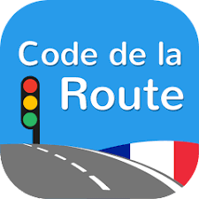

Bonjour,
je m'appelle Quentin
& je suis en terminal STI2D
avec l'option SIN :
spécialités Système d'Information et Numérique
et mathématique/physique chimie
Mon parcours
En primaire j'étais à l'école de Chassagny : La Rose des Vents
Stage de 3ème dans l'Opérateur Informatique et & Telecom (ENEDIS/GRDF)
J'avais 14 ans quand j'avais fait ce stage.

Au lycée j'étais à Givors : Lycée Polyvalent Aragon-Picasso
En 1ère je suis passé dans la filière technologique (STI2D) et en Terminal j'ai choisi l'option SIN car je voudrais faire mes études supérieurs dans l'informatique donc comme ça j'aurai des bases pour la suite de mes études

| Langues en cours d'apprentissages : | Français | Anglais | Italien |
|---|---|---|---|
| Pourquoi je l'ai choisi ? | C'est ma langue maternelle | Car pour mes études supérieures j'en aurai besoin donc ça m'arrange que cette langue est obligatoire | J'ai des origines italiennes et je voulais apprendre la culture italienne car cela m'interesse énormément |
| Depuis quand ? | Depuis mon plus jeune âge | Depuis la primaire | Depuis la 5ème |
Diplômes

A l'âge de 14ans donc en classe de 5ème, j'ai passé mon ASSR1 et je l'ai réussi. Et à l'âge de 16ans donc en classe de 3ème, j'ai passé mon ASSR2 et je l'ai réussi aussi.
A l'âge de 16ans aussi donc toujours en classe de 3ème mais l'a a la fin de cette année scolaire j'ai passé le brevet et j'ai eu mention bien.
Pour le bac de français en 1ère a été très difficile car on avait pas de professeur de français, on a du se débrouiller tout seul, à l'oral j'ai pu avoir 14/20 mais à l'écrit j'ai pu avoir que 10/20 donc bon, ma moyenne de bac de français de 2022 est de 12/20.
Est ce que j'aurai mon bac de STI2D à la fin de cette année ?
Par rapport au contrôle continue c'est déjà bien parti car l'année dernière j'avais eu 16,34 de moyenne générale de l'année avec 16,71 de moyenne dans la matière Ingénieurie et Développelent Durable, 15,53 en Mathématiques et 17,04 en Physique-Chimie.
Formations
Début 2018, je suis rentré dans une association de secouristes pour passer mon PSC1 en tant que mini secouriste et je suis resté 2 ans dans cette association en faisant des postes de secours, les défilés, les cérémonies ect. Ce lien est le site de l'association de Saint-Genis-Laval qui permettra soit de vous inscrire à une formation soit même à vous inscrire dans cette assocation pour sauver des vies dans différents postes de secours.
J'ai passé le PSC1 fin de 2018 car on a un an de formations avec des regroupements de plusieurs weekend durant l'année et là ce que je vais faire c'est de me faire recycler car cela fait trop longtemps que je n'ai pas pratiqué donc je suis moins performant qu'avant. Faites la même chose que moi, passer votre PSC1 car si jamais quelqu'un de votre famille a un problème alors vous pourriez l'aider et sauver sa vie !

J'ai passé mon Code de la route en 2023, après j'ai passé mes 20h de conduite pour apprendre à conduire et là depuis le 15 mars je suis en conduite accompagnée, je dois faire 3 000km en une année donc je passe mon permis en mars 2024 si tout va bien.
Résultat du code de la route
Passions
Je possède 3 passions que je peux faire durant l'année mais pas tous en même temps car cela me prends beaucoup de temps dans ma vie comme :
I) Les voyages :
J'aime bien voyagé pour apprendre de nouvelles cultures, regarder le paysage, pour sortir de ma zone de confort, pour rencontrter de nouvelles personnes... En avril 2023, j'ai eu la chance de partir en colonie de vacances en Grèce, j'ai visité plusieurs îles comme Santorin, Naxos, et j'ai finis mon voyage par Athènes. Voici 3 couchers de soleil magnifiques de là-bas.

Ce coucher de soleil vient de l'île de Santorin à Oia. Les bateaux au loin rend cette photo encore plus magnifique
Ce coucher de soleil vient aussi de l'île de Santorin à Oia, elle a été prise dans un autre point de vue avec le moulin à droite qui rend cette photo différente de la première.

Ce coucher de soleil n'est pas de l'île de Santorin mais d'une autre île, celle de Naxos.
Ma deuxième passion est :
II) La moto cross :
J'ai appris à faire de la moto cross sur 125 YZ en colonie de vacances il y a 8 ans environ sur circuit, dans un premier temps, j'ai appris déjà a utiliser la moto puis dans un second temps, j'ai appris à faire des roues arrières (wheeling), à se lever sur la moto ect, j'ai beaucoup aimé cette colo. Et cette été (été 2023) pendant 20 jours, j'ai eu l'occasion de refaire colonie de vacances avec le thème Moto Cross sur Amiens. Si vous voulez voir des vidéos

Durant cette colonie de vacances, on a fait 3 différents circuits plus ou moins compliqué : on a fait 2 circuits plutôt facile selon moi et le dernier circuit qui était plus difficile car déjà c'était un circuit de compétition de moto cross donc il y avais plus de montées et de descentes avec des bosses en plus
III) La plongée sous marine :
J'ai appris à faire de la plongée en colonie de vacances en Corse pendant 2 semaines où j'ai passé mon niveau 1 de plongée en aout 2022
et depuis cette colo je n'ai jamais décrocher la plongée sous marine car j'aime ça ! En septembre 2022 je me suis inscrit dans un club de plongée à Villeurbanne avec mon père. C'est une activité que je pratique en famile avec mon père quand cela est possible bien entendu. Tous les lundis nous sommes en séance de piscine pour nous entraîner à nager avec des palmes , faire de l'apnée et faire des exercices avec des bouteilles où nous pouvons aller à 4m de profondeur maximum. Ces exercices nous servent a s'améliorer pour passer notre niveau 2.
<<<<<<< HEADA part les séances de plongées entre novembre et mars nous faisons quelques séances de fosse à Meyzieu pour descendre jusqu'à 20m de profondeur et faire des exercices qui nous servent en mer. Faire des exercices de personnes en difficulté par exemple : doner de l'air a quelqu'un, faire des remontées controlées assistées ect. A partir d'Avril nous avons les premieres sorties en mer comme par exemple en Avril 2023, nous sommes allés à Saint-Raphaël pour faire de la plongée sous marine en mer, l'eau était à 13°C donc je peux vous le dire qu'elle était froide
A partir de juin nous avons les premieres sorties au lac de Chamagnieu ce qui permet de faire des exercices avec de l'eau plus trouble donc avec de vraie conditions qu'on pourrait avoir en mer. Fin août 2023, nous sommes partis à Saint-Raphaël (Le Dramont) pour faire de la plongée pendant 1 semaine chaque jour : le matin et l'apres-midi suivant les pertubations de la mer et j'ai aussi fait ma première plongée de nuit.
On peut aussi voir des épaves à partir de 40m de profondeur.
Et suivant les destinations nous pouvons faire des voyages comme aller en Egypte, aux maldives, en Italie ect durant l'année.A part les séances de plongées entre novembre et mars nous faisons quelques séances de fosse à Meyzieu pour descendre jusqu'à 20m et faire des exercices qui nous servent en mer. Faire des exercices de personnes en difficulté en mer par exemple : doner d el'air a quelqu'un, faire des remontées assistées ect a developper